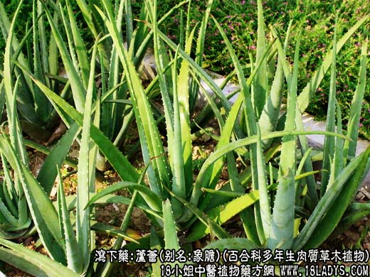
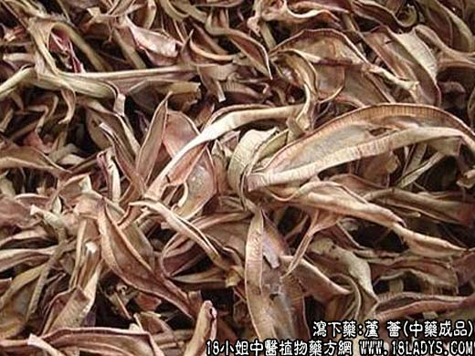
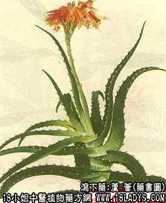

芦荟为少常用中药。始载于宋《开宝本草》。商品分老芦荟与新芦荟两种。
1、老芦荟。
别名：肝色芦荟。
来源：为百合科多年生肉质草本库拉索芦荟或同属植物华芦荟的叶汁干燥而成。
产地：主产于南美洲北岸附近的库拉索，阿律巴及博内尔小岛。华芦荟产我国广东、广西、云南等地。
2、新芦荟。
别名：透明芦荟，好望角芦荟。
来源：为百合科多年生肉质草木植物好望角芦荟的液汁干燥而成。国外进口。
产地：主产于南非联邦。
采收加工：全年皆可采收，割取叶片取其液汁置容器中，蒸发凝固即成。
性状鉴别：1、老芦荟。常破碎为不规则的块状，呈多角形，大小不等。暗红色或咖啡棕色，次品显棕黑色。质硬，不易碎断。断面平坦，蜡样，无光泽。热天不溶化。具不愉快的臭气，味极苦。
2、新芦荟。棕褐色而发绿。体质酥脆，易碎破。断面平滑而具玻璃样光泽。有酸气，热天易溶化成流质。其余与老芦荟相同。
以气味浓，溶于水后无杂质及泥沙者为佳。一般认为老芦荟比新芦荟质优。
主要成分：芦荟甙、异芦荟甙、树脂、芦荟大黄素。
功效与作用：清热凉肝，泻下杀虫。其原理为：芦荟素有较强的刺激性，内服小量能刺激胆汁的分泌，促进肠管蠕动而排便。服大量则易发生腹痛、盆腔 充血。另又有苦味健胃作用。此外，实验证明用50%的芦荟水浸剂，对各种皮肤真菌，有不同程度的抑制作用。
炮制：生用。
性味：苦寒。
归经：入肝、胃、大肠经。
功能：杀虫，通便，清热凉肝。
主治：小儿疳积，惊痫，便秘。
临床应用：1、泻下。适用于习惯性便秘和热积便秘，因芦荟通便后，并不会象大黄一样引起便秘，因此，可用于慢性便秘，方如更衣丸。
2、健胃。治小儿疳积，配尖槟、白芍、独脚金、萹蓄、甘草、厚朴、山楂、布渣叶。
3、泻肝。治肝经实火，证见右上腹疼痛、头晕、头痛、耳聋、神志不宁、易怒、大便秘结，甚则发热等等，取其能清热凉肝，如当归龙荟丸，现代根据此原理，以芦荟为主药，治肝道结石合并感染，有较好效果。此外，以芦荟配合龙胆草，治惊悸抽搐。
使用注意：芦荟为刺激性峻下药，能使肠壁和盆腔充血，因此，月经来潮、妊娠、腹痛、痔疮、便血和脾胃虚弱者忌用。
用量：缓下0.3～0.6g，峻下0.9～0.15g，只作丸散剂，少入煎剂。
处方举例：1、更衣丸（《先醒斋医学广笔记》）：芦荟21g，朱砂15g，研细末，滴好洒少许为丸，每服3.6g，治肠胃燥结兼有睡眠不安者。
2、当归龙荟丸（《宣明丸》）：当归、龙胆草、黄柏、黄连、黄芩、栀子各30g，大黄、青黛、芦荟各15g，木香6g，麝香1.5g，制丸如小豆大，每服二三十丸，以姜汤送服。